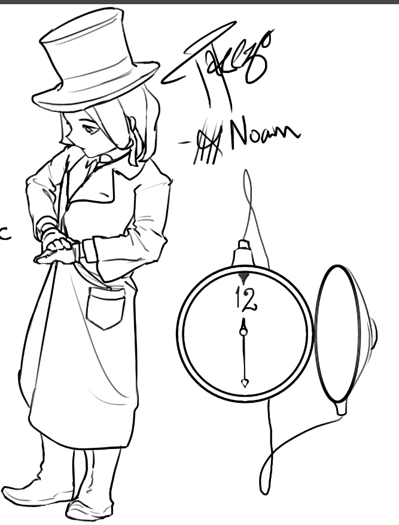
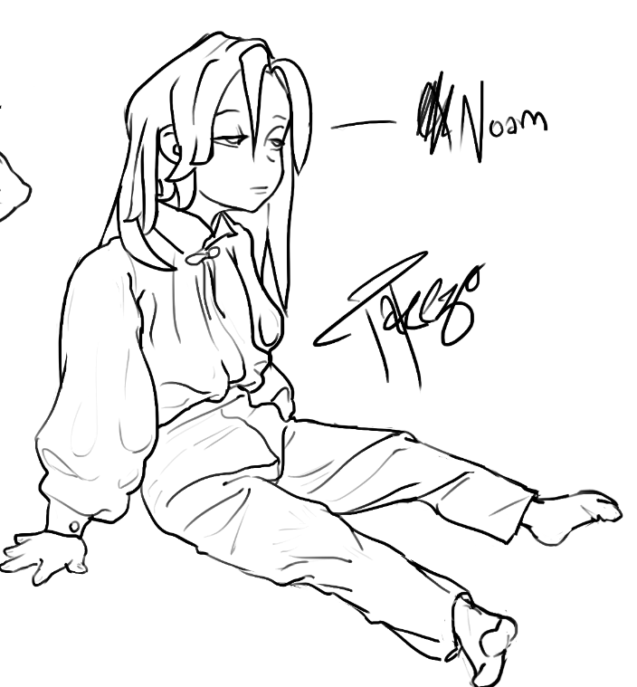
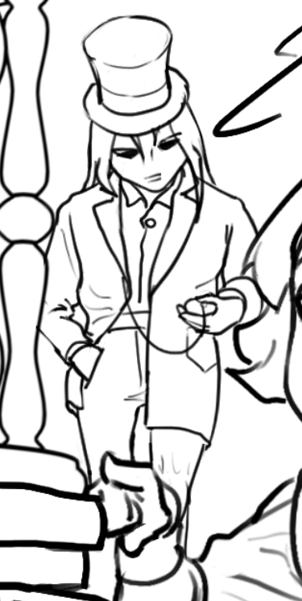
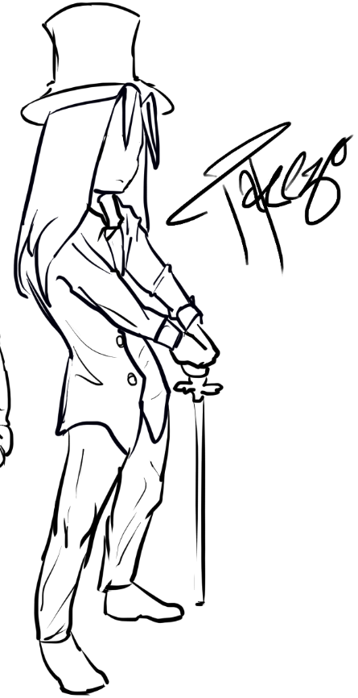
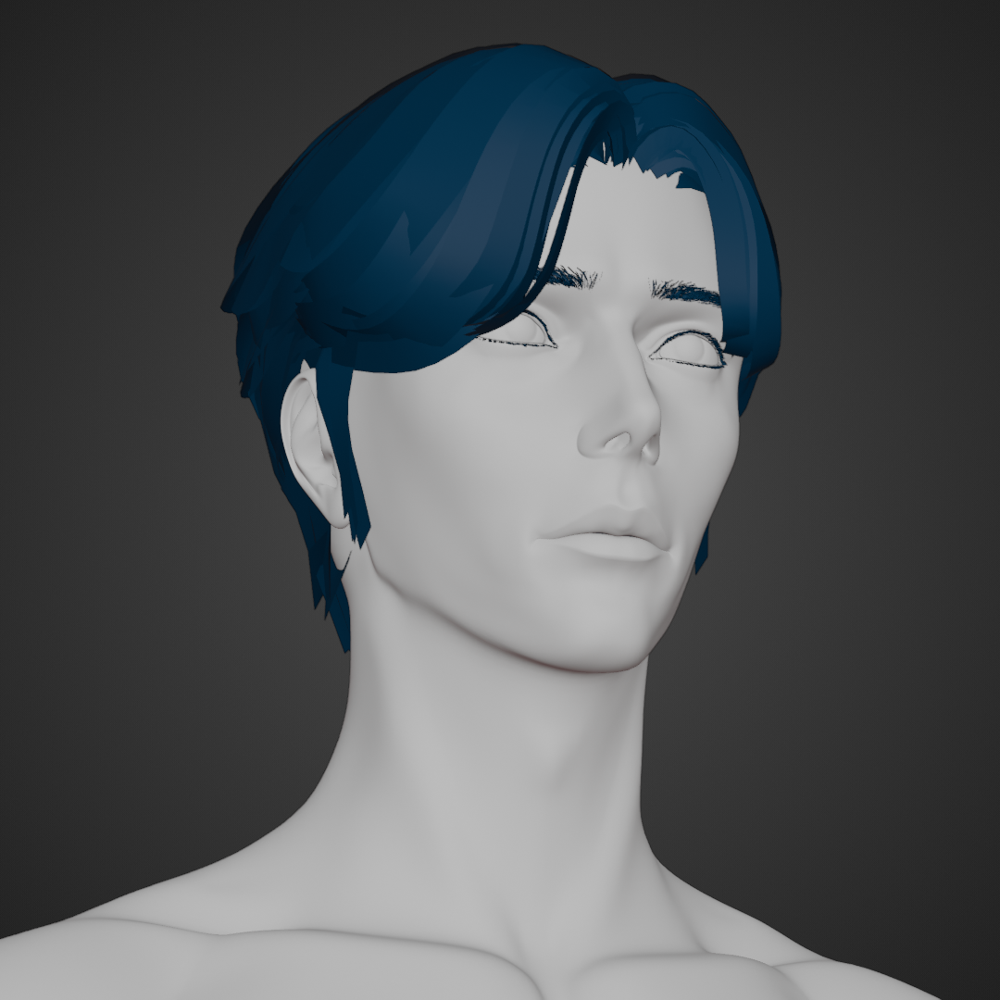
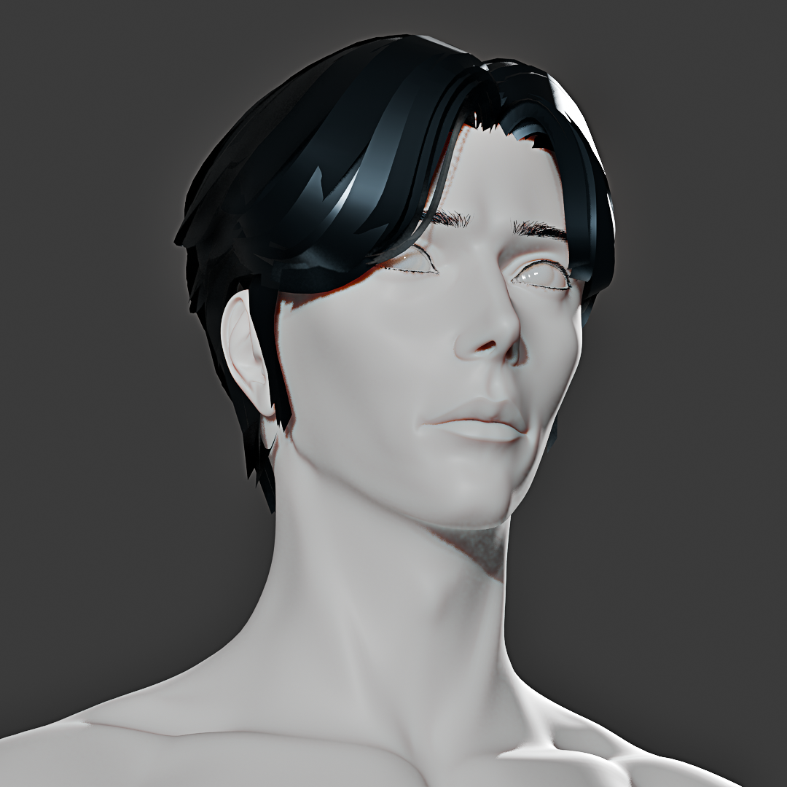
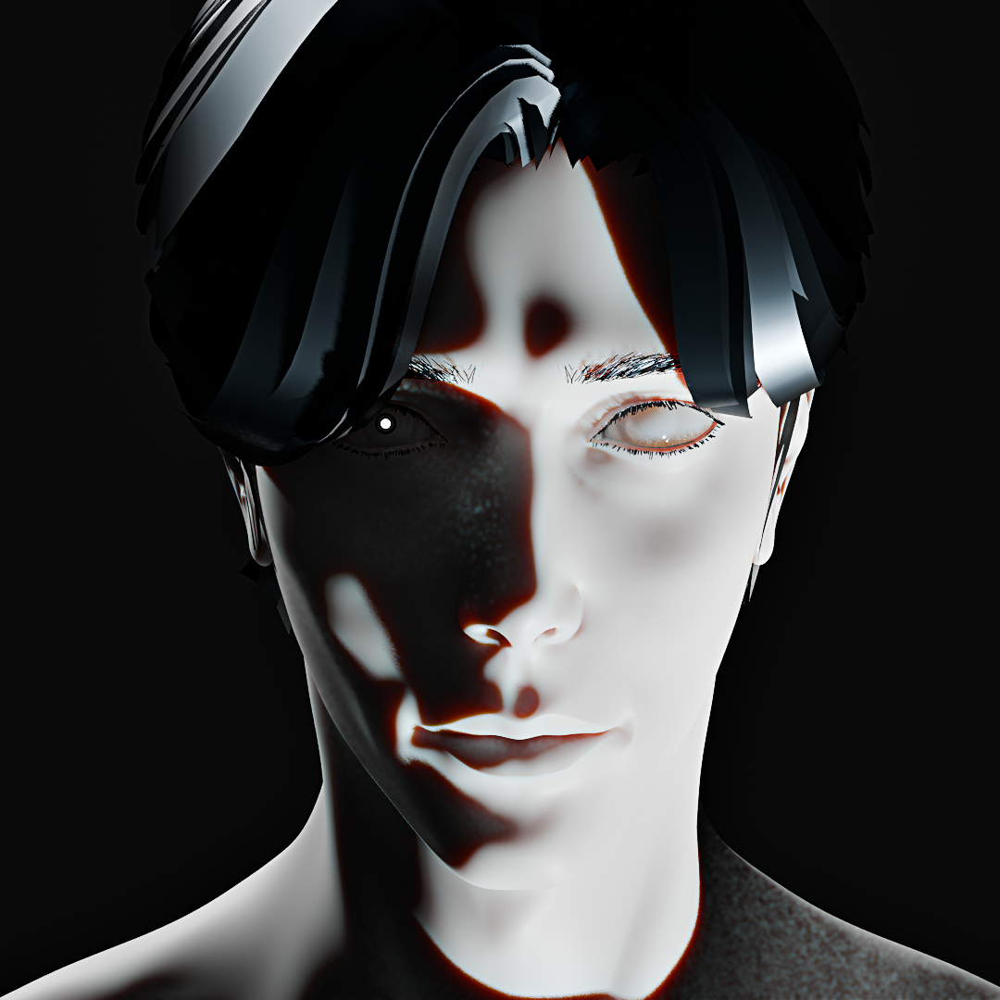

Noam
Tags: project-zaman characters character antagonist heir noam gibborim head-family conditioning active
“The Instrument of Pleasantness”
His name means pleasantness. He was taught to turn it into a weapon.
MBTI: ENTJ (Not judged completely)
Name Meaning: Hebrew, no’am, “pleasantness”
Age: Same as the original MC
Appearance: Physically resembles the original MC
Family: Head Family; son of Noam’s Father
Origin: Placed within Ashbourne Children’s Home by his Masonic parents
Role: Primary antagonist
Status: Active
Overview
Noam is the closest thing Project ZAMAN has to a mirror antagonist.
He is the same age as the original MC, resembles him physically, and spent part of his childhood within the same institutional environment. Beneath those similarities, however, their formation is almost perfectly reversed.
The original MC entered the cult’s system as an outsider and was gradually stripped of his identity.
Noam was placed inside that system deliberately and taught to treat its identity as his own.
His place in the Head Family gives that formation an inheritance structure. He is not only a believer within Gibborim; he is an heir whose failures can be measured against his father and disciplined by figures such as The Oath-Keeper.
He did not discover the cult.
He was formed by it.
His name contains the first irony of his character. No’am means pleasantness, yet his upbringing teaches him to use pleasantness as concealment, influence, and control.
He is trained not merely to possess power, but to make power appear harmless until resistance is no longer possible.
This principle defines both Noam and Anthropos:
Present safety.
Invite trust.
Observe quietly.
Act only once the subject has already entered the system.
Appearance
Noam is roughly the same height and build as the original MC.
Their facial structures are similar enough to create immediate visual association, but not enough to make them identical. Noam should appear like a version of the original MC shaped by comfort, presentation, and deliberate social cultivation rather than captivity.
The resemblance is intentional.
He is not a literal duplicate. He is a visual argument.
Where the original MC’s appearance reflects vulnerability, internality, and the visible consequences of confinement, Noam presents refinement, confidence, and controlled elegance.
He is what the cult might claim the original MC could have become through obedience.
In truth, he is what the cult successfully produced through conditioning.
After the Oscillation, the resemblance extends uncomfortably to Subject-001. Noam appears to stand opposite the soul-fragment of the person whose destruction began with his childhood report.
He may not initially understand the metaphysical reason for this resemblance.
He understands its emotional threat immediately.
Pleasantness as an Instrument
Noam’s pleasantness is not entirely false.
He can be charming, attentive, eloquent, and socially perceptive. These qualities originated naturally, but the cult trained him to use them strategically.
He learns that warmth can lower resistance more effectively than intimidation.
He learns to offer reassurance while collecting information.
He learns to make another person feel understood without accepting any responsibility for what that understanding reveals.
His manner therefore operates in layers:
| Surface | Function |
|---|---|
| Politeness | Prevents others from immediately identifying him as a threat |
| Charm | Encourages disclosure and emotional dependence |
| Composure | Creates the impression that he possesses greater certainty than those around him |
| Empathy performance | Allows him to imitate concern without allowing concern to obstruct his objectives |
| Authority | Appears only after trust, access, or control has already been established |
Noam rarely needs to announce his power.
He prefers circumstances in which others recognize it too late.
His pleasantness is most dangerous when it is genuine enough to be convincing.
Formation
Noam is placed within Ashbourne Children’s Home by his Masonic parents.
His purpose is to observe the children and report signs of unusual capability, behavior, or potential value to the cult. He is effectively deployed as an intelligence asset before he is old enough to understand what such a role means.
At first, the assignment is presented to him as responsibility.
He is encouraged to be observant.
He is praised for remembering details.
He is rewarded when adults consider his reports useful.
The cult does not initially require him to behave cruelly. It only teaches him that approval follows usefulness.
This distinction matters.
Noam’s conditioning begins through praise rather than punishment.
He learns to associate attention, family approval, and personal worth with the quality of the information he provides.
By the time he is capable of understanding the consequences, observation has already become part of how he relates to others.
The First Report
At Ashbourne, Noam forms a genuine friendship with the original MC.
The bond is real, even though the circumstances surrounding it are not.
When the original MC reveals his miracles, Noam reports what he has witnessed to his family. He does so with childlike excitement, not calculated malice.
He believes he has discovered something extraordinary about his friend.
He does not understand that the adults receiving this information are already searching for children with precisely such abilities.
The report reaches the cult.
The original MC is identified, classified, and extracted from Ashbourne.
This becomes the hinge point of Noam’s life.
His first devastating act is committed innocently.
Everything that follows is shaped by his refusal to confront that innocence once it is gone.
Guilt and Self-Justification
As Noam grows older, he gradually becomes capable of understanding what his report caused.
He cannot change the past.
He could, however, admit that the system exploited both of them.
Instead, he constructs an ideology that allows him to reinterpret the harm as necessity.
If the original MC’s suffering produced valuable knowledge, then the extraction was justified.
If the miracles were too important to remain uncontrolled, then confinement was responsible.
If the experiments served humanity, then those conducting them were not abusers.
If Noam’s report began the process, then perhaps he was not a betrayer.
Perhaps he was the first person to recognize the original MC’s significance.
This reasoning protects Noam from guilt by converting consequence into purpose.
The more suffering the cult causes, the more completely he must believe in its mission. Otherwise, every sacrifice becomes evidence against him.
His conviction therefore deepens alongside the damage.
He does not become loyal because the cult proves itself righteous.
He needs the cult to be righteous because he has already given it too much.
Personality
Noam is commanding, strategic, socially intelligent, and intensely concerned with control.
He is capable of long-term planning and understands how institutions move through hierarchy, reputation, fear, and selective reward. He prefers to shape the conditions surrounding a decision rather than argue openly for the result he wants.
His defining traits include:
-
Strong organizational intelligence
-
Confidence in hierarchical systems
-
Skilled social performance
-
A need to appear composed and decisive
-
Contempt for visible hesitation
-
Dependence upon external proof of competence
-
A tendency to reinterpret cruelty as necessity
-
Fear of anything that cannot be classified or controlled
-
An increasing inability to distinguish conviction from self-preservation
Noam does not consider himself cruel.
He considers himself capable of doing what weaker people cannot.
This belief allows him to treat compassion as sentimentality, doubt as cowardice, and resistance as evidence that greater pressure is required.
Relationship to the Original MC
The original MC is Noam’s childhood friend, first betrayal, greatest institutional success, and deepest personal failure.
Noam’s feelings toward him are therefore contradictory.
He may experience:
-
Residual affection from childhood
-
Pride in having discovered his abilities
-
Resentment toward the guilt attached to his extraction
-
Envy of the original MC’s internal independence
-
Contempt for his vulnerability
-
Fear of his miracles
-
A need to prove that the cult’s treatment of him was justified
Noam cannot allow the original MC to remain merely a harmed child.
He must become a necessary subject.
If the original MC was only a person who trusted him, then Noam betrayed that trust.
If he was an unprecedented metaphysical asset, then Noam can recast betrayal as recognition.
This is why Noam repeatedly speaks of the original MC through institutional language. Classification protects him from intimacy.
A subject can be studied.
A friend must be answered.
Relationship to Alyna
Alyna represents everything Noam has trained himself to distrust.
Her care is voluntary.
Her loyalty is not purchased through rank, doctrine, or reward.
She recognizes the original MC as a person without requiring his usefulness to justify that recognition.
To Noam, this makes her influence both irrational and dangerous.
He may initially dismiss her as emotionally compromised, but her continued resistance exposes a possibility he cannot tolerate:
Someone can understand the cult’s mission and still reject it.
Alyna’s existence challenges Noam’s belief that obedience is the inevitable result of knowledge. She sees the same institution he sees and reaches the opposite moral conclusion.
During the confrontation that leads to her death, Noam does not necessarily intend for her to be killed.
He creates the conditions in which panic, weapons, and institutional force converge.
A soldier fires.
Alyna dies.
Noam may call the event an accident.
The narrative does not allow him to treat accident as innocence.
The Decay of Noam
Noam’s transformation is gradual.
He does not move from innocence to villainy in a single decision. Each stage is an adaptation that makes the next one easier.
| Stage | Development |
|---|---|
| Childhood | Observant, eager to please, and unaware of the consequences of his reports |
| Early Adulthood | Condescending and performative; measures his worth through approval, presentation, and results |
| Institutional Rise | Learns to suppress doubt and present obedience as leadership |
| Middle Period | Uses cruelty as proof of conviction and belonging |
| Late Period | Becomes a complete cult ideologue; the mission absorbs every independent standard by which he might judge himself |
Early Noam seeks approval from the system.
Later Noam becomes one of the people who decide who deserves approval.
The transition gives him authority but does not free him from the frightened child beneath it. He remains dependent upon institutional validation, only now he receives it through command rather than praise.
By the end, it becomes difficult to separate his personal will from his conditioning.
The tragedy is not simply that he cannot be redeemed.
It is that he has spent so long redefining freedom as obedience that redemption may no longer appear meaningful to him.
The Fear Beneath
Noam is deeply afraid of Subject-001.
He may fear Subject-001’s abilities, unpredictability, and connection to the Oscillation, but these are not the true source of his terror.
Subject-001 represents a person who passed through the same system and remained internally unabsorbed.
The original MC was restrained, conditioned, isolated, and broken apart. Yet the soul-fragment carrying his empathy and moral continuity still exists.
Subject-001 therefore disproves one of Noam’s most important beliefs:
The system does not inevitably define everyone it touches.
If the original MC could survive without becoming what the cult intended, then Noam must confront the possibility that he also could have resisted.
That possibility is unbearable.
It threatens to transform his entire life from destiny into participation.
Noam’s authority is armor constructed around this fear.
The more destabilized he becomes, the more rigidly he performs certainty.
He raises his voice only after control begins slipping.
He intensifies doctrine when reality contradicts it.
He becomes cruelest when Subject-001 forces him closest to self-recognition.
Relationship to Subject-001
Noam initially understands Subject-001 as a consequence of the Oscillation rather than a legitimate continuation of the original MC.
This distinction allows him to avoid responsibility.
If Subject-001 is merely an anomaly, then the person Noam betrayed remains dead.
If Subject-001 carries the original MC’s soul, grief, and moral identity, then Noam is standing before the living consequence of his choices.
Subject-001 remembers Noam unevenly.
The emotional response may arrive before the factual memory:
-
Familiarity without trust
-
Anger without context
-
Fear associated with Noam’s voice
-
Recognition of controlled pleasantness
-
Grief linked to Alyna’s death
-
The sense of having once loved someone who became unrecognizable
Noam may attempt to exploit this uncertainty.
He can present himself as an old friend, a necessary authority, or the only person capable of explaining Subject-001’s origin.
His most effective manipulations contain fragments of truth.
He did know the original MC.
He did care for him once.
He does understand parts of what happened.
What he cannot admit is that understanding never prevented him from participating.
Noam and Subject-002
Subject-002 presents a different threat to Noam.
Subject-001 carries the soul that can judge him.
Subject-002 carries the body that physically endured the consequences of his actions.
Noam may find Subject-002 easier to dismiss because the vessel appears silent, neutral, and emotionally inaccessible. Yet the original body remains a living record of what the cult did.
The straitjacket, conditioned movements, defensive reactions, and visible trauma cannot be argued away through doctrine.
Subject-002 does not accuse Noam.
He does not need to.
His body is the accusation.
Role in the Oscillation
Noam becomes directly involved in the maximum-pressure procedure that culminates in the Oscillation of Eras.
By this stage, he has learned to interpret resistance as evidence that pressure has not yet been sufficient.
When previous experiments fail to produce the desired results, he does not reconsider the underlying theory.
He escalates.
The original MC’s instability is treated as an obstacle to measurement rather than proof that the procedure itself is destructive.
Noam authorizes or orders the conditions that force both soul-forms into simultaneous fluctuation, including the confrontation with the truth preserved inside the Eleventh Chamber.
The result is not controlled transcendence.
It is metaphysical fission.
The original MC ceases to exist as a unified person.
Noam’s greatest institutional achievement becomes the catastrophe that destroys the object of the institution’s study.
Alyna’s Death
Alyna is killed during a confrontation provoked by Noam’s actions.
The fatal shot is fired by a panicked soldier, but the violence does not occur in isolation. Noam creates the environment in which armed force, fear, and emotional pressure are allowed to converge.
After Alyna falls, Noam shoots the original MC in the waist.
The act exposes the collapse beneath his composure.
The shooting is not only tactical. It is an attempt to reassert control over a situation that has escaped every system he trusts.
Alyna is dead.
The original MC is emotionally destabilized.
The procedure has exceeded its intended boundaries.
Noam responds as he has been trained to respond when control fails:
He applies greater force.
Key Actions
-
Entered Ashbourne Children’s Home as an intelligence asset for his Masonic family
-
Formed a genuine childhood friendship with the original MC
-
Reported the original MC’s miracles to the cult
-
Triggered the process that led to the original MC’s extraction
-
Rose through the cult by demonstrating loyalty, competence, and ideological discipline
-
Helped escalate experimentation to maximum-pressure conditions
-
Ordered or authorized the procedure that culminated in the Oscillation of Eras
-
Provoked the confrontation in which a panicked soldier killed Alyna
-
Shot the original MC in the waist following Alyna’s death
-
Continued serving the cult after witnessing the consequences of its methods
-
Became deeply fearful of Subject-001 and what his survival represents
Narrative Function
Noam represents the transformation of conditioning into ideology.
The original MC is dehumanized from outside.
Noam learns to perform that dehumanization from within.
He demonstrates how institutions reproduce themselves without requiring every participant to begin as malicious. A child can be rewarded for observation, praised for obedience, and taught to call usefulness virtue.
Over time, the performance becomes identity.
Noam is dangerous not because he lacks emotion, intelligence, or self-awareness.
He possesses all three.
He uses them to defend a system whose collapse would force him to reinterpret his entire life.
He is not the opposite of the original MC because he feels nothing.
He is the opposite because he repeatedly chooses structure over recognition, even when recognition is still available to him.
Thematic Significance
Noam embodies the weaponization of pleasantness.
Anthropos presents exploitation as charity.
Axios presents cruelty as research.
Gibborim presents domination as sacred stewardship.
Noam presents control as concern.
His name therefore becomes more than irony. It becomes a summary of the cult’s method.
The institution does not always approach its victims with visible violence.
Sometimes it smiles.
Sometimes it speaks gently.
Sometimes it calls the cage protection.
Noam is the human form of that contradiction.
He is persuasive because fragments of his pleasantness remain sincere. Somewhere beneath the doctrine is still the child who admired his friend’s miracles and wanted the adults around him to be impressed.
That child did not understand what his report would cause.
The adult understands.
He continues anyway.
Core Conflict
Noam’s internal conflict rests upon three truths he cannot allow himself to accept:
-
His first betrayal was innocent, but his later participation was not.
-
The cult shaped him, but conditioning does not erase every moment in which he chose to continue.
-
Subject-001’s survival proves that the system was powerful, but never absolute.
Noam can preserve his identity only by denying these truths.
Subject-001 threatens him not merely through opposition, but through existence.
He is proof that something human survived the institution.
Noam has spent his life proving that nothing should.
He reported the miracles because he was excited. Everything afterward was an attempt to prove that the excitement had not been a betrayal.
Visual References
Concept
Asset Tags: concept
Child




3D Visuals
Asset Tags: 3d-model
Adult


